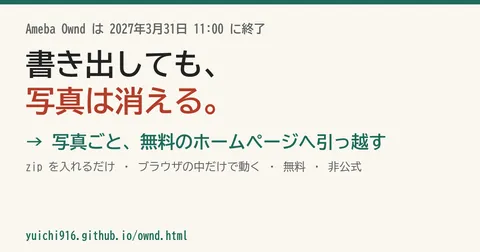
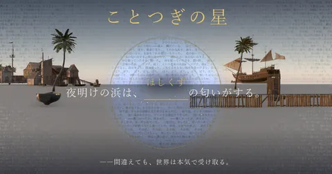
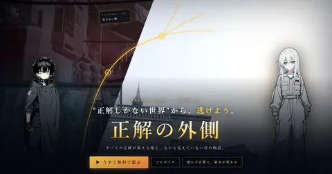
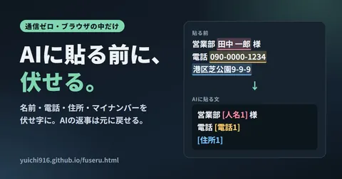
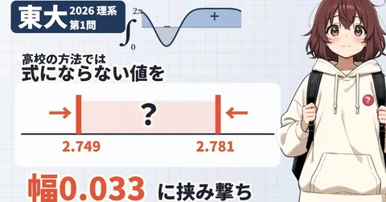
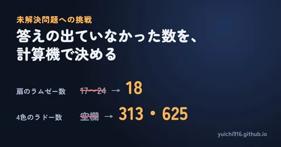
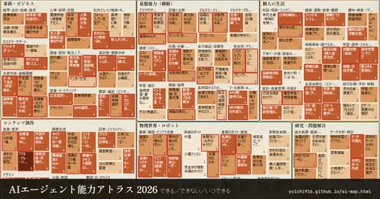
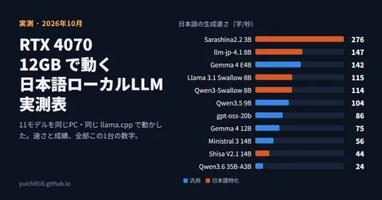

NEW一筆書きローグライク一筆花火2線を引くと、その始まりから火が追ってくる。追いつかれる前に花火を全部ひらく。物語モード全7章と世界ランキングつき。ひらく →
NEWRoblox のゲーム+1 Balloon風船だけで、宇宙まで飛ぶ。輪をくぐり、敵を撃退して、10の空の世界の先へ。プレイ動画も見られます。ひらく →
NEW一筆書きローグライク一筆花火2線を引くと、その始まりから火が追ってくる。追いつかれる前に花火を全部ひらく。物語モード全7章と世界ランキングつき。ひらく →
NEWRoblox のゲーム+1 Balloon風船だけで、宇宙まで飛ぶ。輪をくぐり、敵を撃退して、10の空の世界の先へ。プレイ動画も見られます。ひらく →

NEW無料の引っ越し道具Ameba Ownd の写真を、消さずに引っ越す2027年3月31日に終わる Ameba Ownd。書き出しの zip を入れると、写真をぜんぶ保存し、無料で公開できるホームページ一式を作ります。ひらく →遊ぶ 無料のブラウザゲーム
13つすべて見る →


読む フルボイスのサウンドノベルと読みもの
6作すべて見る →
NEW言葉で分岐するノベルゲームことつぎの星星が堕ち、言葉のかけらが浜に打ち上がる島。拾った言葉を文章の欠けへ継いで、物語そのものを書き換える。朗読ボイスつき。
NEWサウンドノベル・全15話正解の外側すべての正解が視える少年と、なにも覚えていない少女の物語。フルボイス・3つの結末・約3〜4時間。 NEWサウンドノベル・約30分百の悪行魔王は百の悪行を残して死んだ。ぜんぶ、嘘だった。勇者が「悪行目録・全百条」を検証する短編。フルボイス・7言語。
NEWサウンドノベル・約30分百の悪行魔王は百の悪行を残して死んだ。ぜんぶ、嘘だった。勇者が「悪行目録・全百条」を検証する短編。フルボイス・7言語。
 NEW短編小説焚き火は、消えない同じ雪の夜、人里離れた小屋にたどり着いた少年と少女。焚き火を挟んだ一夜と、灯守の秘密。森の小屋の物語。
NEW短編小説焚き火は、消えない同じ雪の夜、人里離れた小屋にたどり着いた少年と少女。焚き火を挟んだ一夜と、灯守の秘密。森の小屋の物語。
使う 無料の道具と、ひとりの時間の場所
10つすべて見る → NEW一人で行ける店の地図ひとり歓迎マップ「ひとりで入れるか」だけを見る地図。いま開いている店を現在地の近い順に。席・支払い・静けさを、公式ページの引用つきで。
NEW一人で行ける店の地図ひとり歓迎マップ「ひとりで入れるか」だけを見る地図。いま開いている店を現在地の近い順に。席・支払い・静けさを、公式ページの引用つきで。
 NEW令和8年分の計算機2026年の年末調整、いくら戻る？年収と家族を入れると、今年の所得税、去年との差、12月に戻る目安を、国税庁の資料どおりの手順で概算します。
NEW令和8年分の計算機2026年の年末調整、いくら戻る？年収と家族を入れると、今年の所得税、去年との差、12月に戻る目安を、国税庁の資料どおりの手順で概算します。

NEW個人情報を伏せ字に伏せる — AIに貼る前に名前・電話・住所・マイナンバーなどを、ブラウザの中だけで伏せ字に。入力はどこにも送りません。AIの返事は元の名前に戻せます。 NEW小説の冒頭を測る書き出し診断冒頭を貼るだけ。Web小説1,222作品の読者評価で較正した物差しが、書き出しの位置と直せる癖を返します。原稿は送信されません。
NEW小説の冒頭を測る書き出し診断冒頭を貼るだけ。Web小説1,222作品の読者評価で較正した物差しが、書き出しの位置と直せる癖を返します。原稿は送信されません。
学ぶ 動画とクイズで学び直す
10つすべて見る → NEW動画シリーズつまずき図鑑人がつまずく所を、1つずつ標本にして動画に。確率と実験の数字は全部コードで検算し、そのコードも公開しています。
NEW動画シリーズつまずき図鑑人がつまずく所を、1つずつ標本にして動画に。確率と実験の数字は全部コードで検算し、そのコードも公開しています。

NEW東大2026 数学 全6問難問ほどき99%の人がわからない問題を、99%の人がわかるように。東大入試の難問を、最初の一手からほどく動画シリーズ。 NEW防災 × 統計南海トラフの日、あなたは津波の想定がある403市区町村から、人口どおりのくじで1人を選ぶ。海岸に1mの津波が届くまで何分かを、国の数字で1分で。
NEW防災 × 統計南海トラフの日、あなたは津波の想定がある403市区町村から、人口どおりのくじで1人を選ぶ。海岸に1mの津波が届くまで何分かを、国の数字で1分で。
 NEWYouTube の動画をシリーズ別に動画の棚「もしも」「記録で比べてみた」など、国や研究機関の数字を1分で比べる動画と、南海トラフの津波ランキング完全版。
NEWYouTube の動画をシリーズ別に動画の棚「もしも」「記録で比べてみた」など、国や研究機関の数字を1分で比べる動画と、南海トラフの津波ランキング完全版。
研究 データと研究ノート
22本すべて見る →
NEW数学 — 計算で決めた値未解決問題への挑戦答えの出ていなかったラムゼー数を5つ、ラドー数を2つ決めた記録。証明は検査器で検証。確かめ方と、届かなかった挑戦まで。
NEWAIに何ができるかの地図AIエージェント能力アトラス8領域・326の仕事を「専門家と比べてどこまでか」の6段階で色分けし、2022→2030年の時間軸で一枚に。全マスに根拠リンク。
NEWRTX 4070（12GB）で実測日本語ローカルLLM 実測表11モデルを同じPCで実際に動かした表。日本語は1秒に何文字出るか、成績、VRAM。推測値なし、生データ付き。 NEW4年分・105,160本のタグQiita 技術マップQiita に書かれる技術は4年でどう変わったか。AIのタグで書いた人は1.2%から34.9%に。月ごとに地図が動きます。
NEW4年分・105,160本のタグQiita 技術マップQiita に書かれる技術は4年でどう変わったか。AIのタグで書いた人は1.2%から34.9%に。月ごとに地図が動きます。